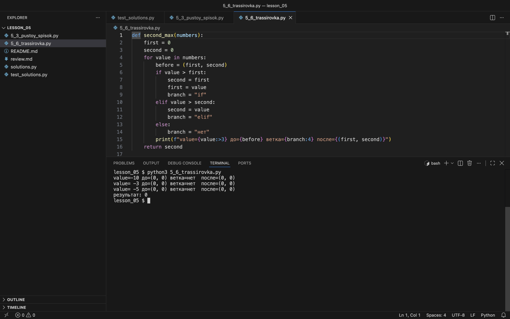

Ручной прогон и границы цикла
Записываем состояния переменных, проверяем полуинтервалы и находим пропущенный элемент.
Dry run: выполняем строки вручную
Интервьюер«at Meta and Google, we don't. We turn off the run button. We never want people to run. Instead we ask people to do a dry run. So can you do a dry run?»
Перевод: в Meta и Google мы так не делаем. Мы отключаем кнопку запуска. Мы не хотим, чтобы код запускали. Вместо этого мы просим сделать ручной прогон. Сможете провести ручной прогон?
Здесь интервьюер объясняет, как проверяют код в этих компаниях: запускать нельзя, нужно пройти алгоритм вручную на входе. Это ровно навык модуля 5.6.
Яндекс Образование«Бывает, что кандидаты не могут самостоятельно найти недочёт в коде, пока интервьюер на него не укажет. При этом скомпилировать код на алгоритмической секции не получится: прогонять код по тестам придётся в голове.»
В Яндексе код тоже не запускают. Таблица состояний из этого модуля и есть способ «прогонять код по тестам в голове» без пропусков.
Ручной прогон (dry run) — последовательное выполнение алгоритма на конкретном входе с записью состояний. Мы фиксируем значения до шага, результат условия и изменения после шага. Так видно, где фактическое выполнение расходится с контрактом.
def second_max(numbers):
first = 0
second = 0
for value in numbers:
if value > first:
second = first
first = value
elif value > second:
second = value
return second| value | first до | second до | Ветка | first после | second после |
|---|---|---|---|---|---|
| −10 | 0 | 0 | Ни одна | 0 | 0 |
| −3 | 0 | 0 | Ни одна | 0 | 0 |
| −5 | 0 | 0 | Ни одна | 0 | 0 |
Для [-10, -3, -5] ожидаем −5, а функция вернёт 0. Начальная пара нулей не описывает обработанную часть. Даже наличие положительных чисел не гарантирует правильность: для [5, -1] второй максимум равен −1, но исходный код вернёт 0.
Таблицу ручного прогона можно получить и от самой программы: добавить print с состоянием до и после каждого шага. Вывод должен совпасть с таблицей выше.
def second_max(numbers):
first = 0
second = 0
for value in numbers:
before = (first, second)
if value > first:
second = first
first = value
branch = "if"
elif value > second:
second = value
branch = "elif"
else:
branch = "нет"
print(f"value={value:>3} до={before} ветка={branch:4} после={(first, second)}")
return second
print("результат:", second_max([-10, -3, -5]))value=-10 до=(0, 0) ветка=нет после=(0, 0)
value= -3 до=(0, 0) ветка=нет после=(0, 0)
value= -5 до=(0, 0) ветка=нет после=(0, 0)
результат: 0Ни одно условие не выполнилось, пара (0, 0) не изменилась, и функция вернула 0. Отладочные print после поиска ошибки удаляют.

print выполняется на каждом шаге цикла, поэтому в терминале три строки состояний и итоговый результат.Правая граница range не включается
Полуинтервал [start, end) включает начало и исключает конец. range(2, 5) перебирает 2, 3, 4. Индексы списка длины n — от 0 до n − 1, поэтому полный проход задаётся range(n).
- Кандидат
contains_zeroготова: на[0, 4]возвращаетTrue. - Интервьюер
Где стоит ноль в вашем тесте?
- Кандидат
В начале.
- Интервьюер
А если в конце —
[4, 8, 0]? - Кандидат
range(len(numbers) - 1)даёт индексы 0 и 1. Индекс 2 не проверяется, функция вернётFalse. Это ошибка. - Интервьюер
Какой самый короткий вход это покажет?
- Кандидат
[0]:range(0)пустой, цикл не выполнится ни разу.
- провёл ручной прогон индексов
- нашёл минимальный контрпример
- проверял только ноль в начале списка
Искомый элемент в начале, в середине и в конце — три разных теста.
Интервьюер«I'm guessing there's a tiny little off by one bug here.»
Перевод: Думаю, здесь маленькая ошибка на единицу.
Логика решения была верной, но индекс сдвинулся на один. Интервьюер не стал разбирать её дальше: заканчивалось время, и разговор перешёл к оценке сложности.
Разбор interviewing.io«In this test case, you'll see that both the left and right pointers end up being 0 and we skip the while loop conditional, never going inside it, and just return -1!»
Перевод: В этом тесте оба указателя, левый и правый, равны 0, условие while ложно, мы ни разу не заходим в цикл и просто возвращаем -1!
Тест: массив [5] и target = 5. Причина — условие while l < r вместо l <= r. Та же граница цикла, что в кейсе «Бинарный поиск» и в contains_zero.
range(len(numbers) - 1) = range(2): i = 0, 1. Индекс 2 с нулём не проверяется, результат False.
print(list(range(2, 5)))
numbers = [4, 8, 0]
print(list(range(len(numbers) - 1)))
print(list(range(len(numbers))))[2, 3, 4]
[0, 1]
[0, 1, 2]Вторая строка — индексы исходной версии для [4, 8, 0]: индекса 2 нет. Третья — полный проход range(len(numbers)).
def contains_zero(numbers):
for i in range(len(numbers) - 1):
if numbers[i] == 0:
return True
return FalseНоль в последней ячейке
Проведите прогон для [4, 8, 0]. Какие значения принимает i? Затем найдите ещё более короткий контрпример.
Открыть разбор
При длине 3 выполняется range(2): индексы 0 и 1. Индекс 2 не проверяется. Контрпример [0] ещё короче: range(0) пуст, цикл не выполняется и функция возвращает False вместо True.
Граница зависит от действия внутри цикла
В проверке соседей мы читаем numbers[i + 1]. Здесь range(len(numbers) - 1) нужен, чтобы последний правый сосед имел индекс n − 1. Одинаковая граница может быть ошибкой в одном алгоритме и правильной в другом.
def is_sorted(numbers):
for i in range(len(numbers) - 1):
if numbers[i] > numbers[i + 1]:
return False
return TrueЗапуск на трёх входах из вопроса ниже и на входе с нарушением порядка:
def is_sorted(numbers):
for i in range(len(numbers) - 1):
if numbers[i] > numbers[i + 1]:
return False
return True
for data in ([], [7], [1, 2, 2, 4], [1, 3, 2]):
print(data, is_sorted(data))[] True
[7] True
[1, 2, 2, 4] True
[1, 3, 2] FalseПроверьте определение порядка
Что вернёт этот код для [], [7], [1, 2, 2, 4]? Как изменится проверка для строго возрастающего порядка?
Открыть разбор
Во всех трёх случаях True. В пустом и одноэлементном списках нет пары, нарушающей порядок. При неубывании равные соседи допустимы. Для строгого возрастания нарушение проверяется через >=, и список с двумя соседними двойками уже даст False.
Проверьте себя
Сначала выберите ответ, потом нажмите «Проверить». Пояснение появится у каждого варианта, в том числе у невыбранных.
Какие значения примет i в for i in range(2, 10, 3)?
11 больше правой границы 10.
Перебор начинается со start = 2, а не с шага.
Верно: старт 2, шаг 3, число 10 не включается.
Правая граница в range не включается, а 10 не получается из 2 шагами по 3.
Строка text длиной 5. Сколько раз выполнится тело for i in range(len(text) // 2)?
Целочисленное деление 5 // 2 даёт 2.
Верно: 5 // 2 = 2, i = 0 и 1. Средний символ с индексом 2 сравнивать не с кем.
//— целочисленное деление, range принимает только целые.
Цикл for i in range(1, len(numbers)) сравнивает numbers[i - 1] и numbers[i]. Для списка длиной 4 проверяются…
Верно: i = 1, 2, 3, пары (0, 1), (1, 2), (2, 3).
Самый большой индекс i = 3 существует. Обращения за конец нет.
range(1, 4) включает 3, пара (2, 3) проверяется.